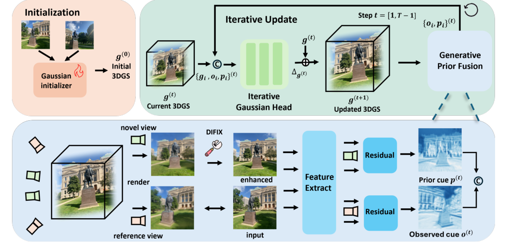
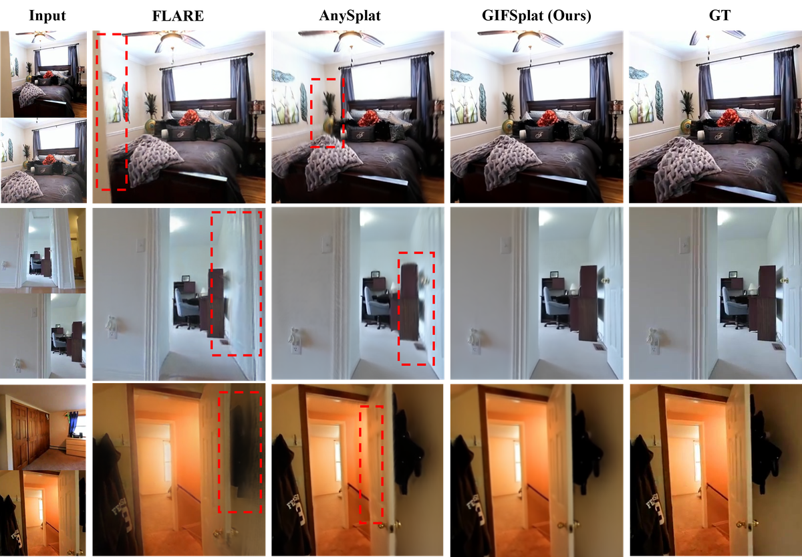
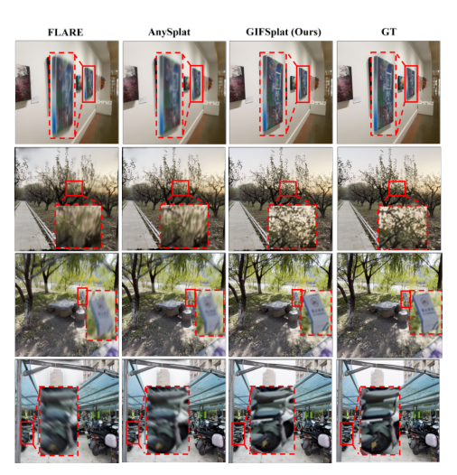
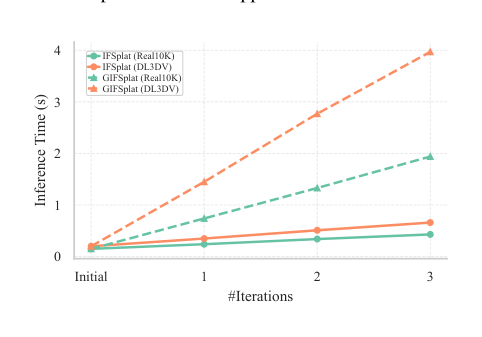

GIFSplat：生成先验引导迭代前馈 3D 高斯泼溅法
简单摘要
从多视图图像重建3D场景是计算机视觉和图形学的基础任务。3D重建沿两条范式快速发展：逐场景优化方法通过迭代最小化光度目标可实现高保真重建但需要长时间测试时优化，限制了实际应用的可扩展性；前馈方法从多视图图像以单次前向传播估计3D属性实现毫秒到秒级推理速度，但单次预测受限于模型容量（复杂场景中保真度较低）且缺乏场景特定精炼。因此核心挑战仍在于：如何实现前馈效率的同时支持对每个场景的自适应和持续精炼。近期研究尝试通过集成生成先验来解决这一限制，但需要长时间的逐场景优化——交替优化3D高斯和使用扩散模型精炼渲染视图，形成反馈循环逐步改善重建质量。然而这种迭代循环不适合现有前馈管线——持续增长的合成视图集增加了时间和内存复杂度，且现有前馈方法从多视图图像直接重建而非更新已有场景表示，使迭代增强不可行。GIFSplat提出了一个结合前馈和优化方法优势的框架。
 图 1
图 1核心创新
第一，提出迭代前馈3DGS框架——第一阶段执行快速前馈产生可靠初始化，第二阶段通过多步前向残差更新对初始预测进行精炼，利用场景证据和扩散增强线索引导残差预测。第二，在保持前馈管线速度的同时实现场景自适应精炼——弥合了单次前馈方法和逐场景优化方法之间的鸿沟。第三，设计了前向残差更新机制——不同于需要反馈循环的优化式方法，通过前馈方式注入生成先验和场景证据，维持了高效的推理速度。第四，使前馈3DGS首次具备了迭代更新已有场景表示的能力——而非每次从头重建。
技术细节

架构图：方法整体流程可微分光栅化器为相机生成渲染。我们删除了体素化模块并将其微调为我们框架的初始化程序，该框架首先预测相机姿势和来自 的初始 3DGS。同时，生成先验融合机制将扩散增强渲染转换为指导这些更新的高斯级线索（如图）。
迭代高斯头预测残差并将当前 3DGS 更新为：该设计保留前馈效率，同时在一次性初始化之上提供轻量级细化信号。以前的前馈方法采用像素对齐的高斯函数，将图块耦合到图像网格。我们不是通过从增强视图扩展监督图像集来重新优化场景，而是增强中间渲染并将增强提取为高斯。
3 方法
可微分光栅化器为相机生成渲染。我们删除了体素化模块并将其微调为我们框架的初始化程序，该框架首先预测相机姿势和来自 的初始 3DGS。同时，生成先验融合机制将扩散增强渲染转换为指导这些更新的高斯级线索（如图）。
迭代高斯头预测残差并将当前 3DGS 更新为：该设计保留前馈效率，同时在一次性初始化之上提供轻量级细化信号。我们不是通过从增强视图扩展监督图像集来重新优化场景，而是增强中间渲染并将增强提取为高斯级线索以供下一次残差更新。对于每个 ，我们使用基于扩散的增强器和预训练模型 Difix 增强当前渲染。
1. 问题定义和框架概述
可微分光栅化器为相机生成渲染。我们删除了体素化模块并将其微调为我们框架的初始化程序，该框架首先预测相机姿势和来自 的初始 3DGS。同时，生成先验融合机制将扩散增强渲染转换为指导这些更新的高斯级线索（如图）。
2. 迭代高斯头
围绕 3.2 迭代高斯头，这一节先处理的是 我们不采用一次性预测，而是采用迭代前馈细化。作者这样设计，是为了先把输入表示、约束条件或中间状态整理成后续模块能直接使用的形式。
接着，论文还会处理 在没有测试时间梯度的情况下，迭代头通过预测前向传递中的每高斯残差，减少渲染观察差异并可选择合并先前的线索，将初始 3DGS 转换为初始 3DGS。它的作用不是重复上一层计算，而是把这一阶段得到的结果继续传给后面
$$ \mathbf{o}_i^{(t)} arrow \frac{\sum_{m\in\mathcal{S}^{(t)}}\sum_{u} w_i(u)\,O_m^{(t)}(u)} {\sum_{m\in\mathcal{S}^{(t)}}\sum_{u} w_i(u)+\varepsilon}. $$
这条式子是在做多视图加权汇聚：模型把不同视角里与第 i 个高斯相关的观测特征按权重累加，再除以总权重得到稳定的对象描述。它的作用是把分散在多张图像里的局部证据整合成后续更新模块可直接使用的外观表征。
$$ \Delta \mathcal{G}^{(t+1)} arrow U_\theta\big(\,[\mathcal{G}^{(t)} \,\|\, \{o_i\}^{(t)}]\,\big), $$
这条式子表示更新网络根据当前高斯状态以及新聚合到的观测特征，预测下一步应该施加的属性增量。也就是说，模型不是每轮从头重建整组高斯，而是在现有表示上做迭代细化。
$$ \mathcal{G}^{(t+1)} arrow \mathcal{G}^{(t)}+\Delta \mathcal{G}^{(t)},\quad t=0,\dots,T-1. $$
这条式子给出了迭代更新规则：新一轮高斯状态等于上一轮状态加上刚刚预测出的增量。它把整个优化过程写成显式的残差式细化，而不是一步跳到最终解。
3. 生成先验融合
围绕 3.3 生成先验融合，我们不是通过从增强视图扩展监督图像集来重新优化场景，而是增强中间渲染并将增强提取为高斯级线索以供下一次残差更新。对

$$
这条式子同样是在做加权汇聚，不过这次聚合的是位置或几何线索。作者借它把多个视角里与当前高斯相关的空间证据合成一个更稳定的几何摘要，减少单视角噪声对更新结果的影响。
$$ \Delta \mathcal{G}_i^{(t)} \;=\; U_\theta\big(\,[g_i^{(t)} \,\|\, \{o_i\}^{(t)} \,\|\, \{p_i\}^{(t)}]\,\big), $$
放在“方法”这一部分看。这条式子表示更新网络根据当前高斯状态以及新聚合到的观测特征，预测下一步应该施加的属性增量。也就是说，模型不是每轮从头重建整组高斯，而是在现有表示上做迭代细化。
$$ \mathcal{G}^{(t+1)}=\mathcal{G}^{(t)}+\Delta\mathcal{G}^{(t)}.,\quad t=0,\dots,T-1, $$
放在“方法”这一部分看。这条式子给出了迭代更新规则：新一轮高斯状态等于上一轮状态加上刚刚预测出的增量。它把整个优化过程写成显式的残差式细化，而不是一步跳到最终解。
4. 损失函数
围绕 3.4 损失函数，我们分两个阶段进行训练，在第一阶段应用几何蒸馏和新颖视图中的光度损失来引导稳定的初始化。在第 1 阶段初始化 中，我们使用像素重建损失来监督第一个前向预测。 在第 2 阶段细化 中。
$$ \mathcal{L}_{\mathrm{rec}} = \lambda_{\mathrm{rgb}}\|I_m - R_m\|_2. $$
这条式子是重建损失：直接比较目标图像与当前渲染结果的差异，推动高斯表示恢复正确外观。它对应的是最基础的监督信号，保证更新后的场景至少先把观测图像还原对。
$$ \mathcal{L}_{\mathrm{stage1}} =\sum_{m\in\mathcal{M}}\big( \mathcal{L}_{\mathrm{rec}}+\mathcal{L}_{\mathrm{dist}} \big). $$
这条式子把第一阶段的多个子目标合并成总损失。作者希望先在较稳定的训练阶段同时兼顾重建误差和辅助约束，为后面的细化阶段打下可靠初值。
$$ \mathcal{L}_{\mathrm{stage2}} =\sum_{t=1}^{T}\omega_t\sum_{m\in\mathcal{M}} \|I_m - R_m^{(t)}\|_2. $$
这条式子是第二阶段的时间加权重建目标：不同迭代步的渲染误差会按权重重新汇总。这样做是为了让模型在后期更关注那些真正影响最终质量的更新结果。
实验结论
我们使用 PSNR、SSIM、LPIPS 作为衡量新视图合成性能的指标。此外，GIFSplat 在生成先验的帮助下获得了最佳结果，保留了精细的纹理，并且比所有其他模型的模糊更少。在这两个基线中，GIFSplat 在所有指标上始终优于强大的前馈基线，与 中更清晰、无伪影的视觉效果保持一致。
4.1 实验设置
首先，在 DL3DV 上以 448×448 分辨率从 8 个输入视图进行新颖的视图合成，其中我们采用 PixelSplat、MVSplat、FLARE、AnySplat 作为基线。我们使用 PSNR、SSIM、LPIPS 作为衡量新视图合成性能的指标。DL3DV 中提供 2571v1/figure5_full.png'
4.2 与前馈基线的比较
此外，GIFSplat 在生成先验的帮助下获得了最佳结果，保留了精细的纹理，并且比所有其他模型的模糊更少。DL3DV 上的 8 视图评估 我们使用

| *3C1cm 2*Methodstyle='border:1px solid #ddd;padding:6px 8px;text-align:left;vertical-align:top;white-space:nowrap;'>Metrics @ 8 views | ||||
|---|---|---|---|---|
| — | — | PSNR | SSIM | LPIPS |
| PixelSplat | — | 22.55 | 0.727 | 0.192 |
| MVSplat | — | 22.08 | 0.717 | 0.189 |
| FLARE | — | 23.33 | 0.746 | 0.237 |
| AnySplat | — | 23.76 | 0.762 | 0.187 |
| IFSplat(Ours) | — | 24.69 | 0.809 | 0.171 |
| GIFSplat(Ours) | — | 24.91 | 0.824 | 0.164 |
| @ 2*Methods | Pose? | DTU @ 2 views | ||
|---|---|---|---|---|
| — | — | PSNR | SSIM | LPIPS |
| pixelSplat | — | 11.551 | 0.321 | 0.633 |
| MVSplat | — | 13.929 | 0.474 | 0.385 |
| NopoSplat | — | 17.899 | 0.629 | 0.279 |
| FLARE | — | 17.528 | 0.596 | 0.283 |
| AnySplat | — | 18.122 | 0.632 | 0.276 |
| IFSplat(ours) | — | 19.921 | 0.701 | 0.274 |
| GIFSplat(ours) | — | 20.214 | 0.716 | 0.251 |
4.3 消融研究
删除迭代细化（第 2 阶段）会在所有指标中产生最大的降级，从而确认了迭代残差更新的必要性。完整的配置实现了最佳性能，展示了所有组件之间的互补性。
| 1.3cm 1.3cm 2*Components | Metrics | ||
|---|---|---|---|
| — | PSNR | SSIM | LPIPS |
| Refinement | 24.781 | 0.826 | 0.169 |
| window att. | 25.327 | 0.837 | 0.152 |
| Gen. Prior | 26.291 | 0.854 | 0.145 |
| Full | 26.559 | 0.867 | 0.138 |

图 6：我们的方法 IFSplat 和 GIFSplat 在两个数据集上的推理时间与细化步骤数的函数关系；两种方法均与 T 近似线性缩放| 1.1cm 1.1cm 1.1cm 1.1cm 1.1cm 2*Steps | Metrics@GIFSplat | |||||
|---|---|---|---|---|---|---|
| — | PSNR | SSIM | LPIPS | PSNR | SSIM | LPIPS |
| initial | 24.901 | 0.831 | 0.164 | 24.901 | 0.831 | 0.164 |
| 1 | 25.512 | 0.843 | 0.155 | 25.774 | 0.845 | 0.151 |
| 2 | 25.873 | 0.847 | 0.150 | 26.107 | 0.849 | 0.147 |
| 3 | 26.291 | 0.854 | 0.145 | 26.559 | 0.867 | 0.138 |
| 4 | 26.311 | 0.855 | 0.146 | 26.561 | 0.865 | 0.137 |
理解评价
如果把这篇论文放回问题背景里看，它真正的价值在于：这些限制源于现有前馈管道中的一次性预测范例。这说明作者不是只补一个局部模块，而是在重新组织问题该怎样被解决。
最能支撑这个判断的，还是实验给出的证据：我们引入了 GIFSplat，这是一个纯粹的前馈迭代细化框架，用于从稀疏的未定视图进行 3D 高斯分布。换句话说，这些设计并不只是概念上更完整，而是实实在在改变了最终结果。
当然，它离真正成熟的方案还有距离：当前方案的局限在于它仍然受制于计算资源、输入质量或场景复杂度，距离真正稳健的大规模部署还有差距。后续更值得继续推进的方向，是 将 GIFSplat 扩展到动态内容或灵活的几何先验（例如已知的深度图或法线图）是未来工作的一个有趣方向。